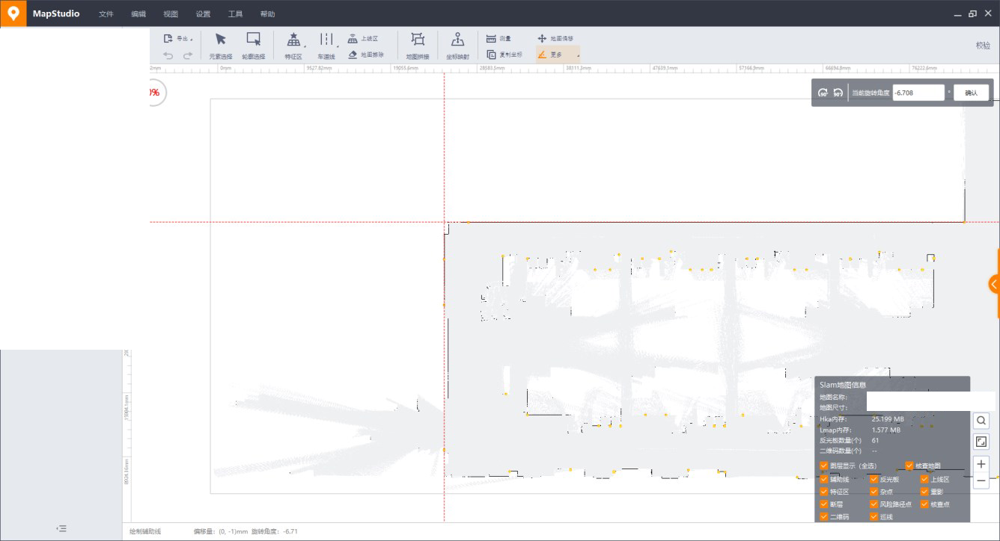
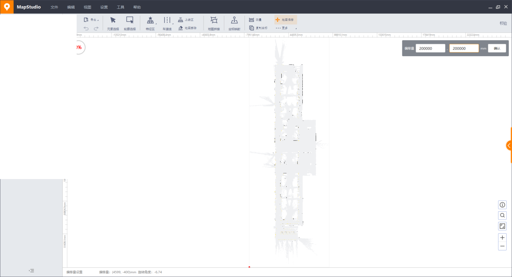
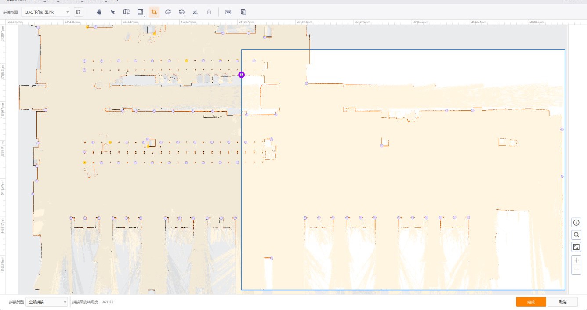
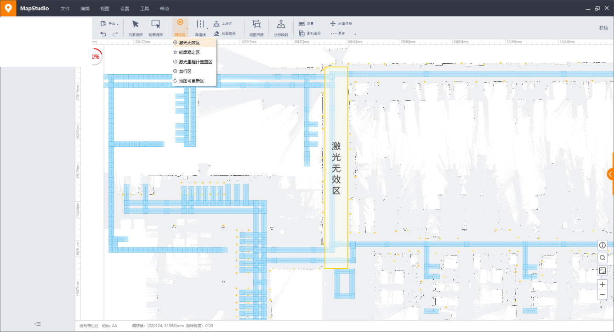

L-SLAM 地图编辑要点
L-SLAM 地图最怕做错不报错、车辆却会飘，旋转微调、负坐标预留与拼接断层这几步尤其容易留下隐患。从工具栏到三类特征区的编辑步骤、混跑偏移换算算例和拼接后必须核查的项都覆盖在内。
地图与定位目录
面向做 L-SLAM 建图与地图维护的现场工程师，依据操作手册 V1.0 的地图编辑章节归纳，坐标偏移与拼接参数在版本间存在出入，实际以现场复测结果调整。
先认识右下角工具栏
地图右下角固定有一个工具栏，从上到下依次是：
| 按钮 | 作用 | 易误解点 |
|---|---|---|
| 地图详情 | 显示 LSLAM 地图信息：地图名称、地图尺寸、图层显示 | 旋转后要靠这里的辅助线做比对 |
| 坐标搜索 | 把输入的坐标居中显示 | 需要已有拓扑地图，且坐标必须在拓扑地图内 |
| 恢复地图 | 把地图缩放成合适大小并居中 | 不会撤销编辑，只改显示 |
| 放大 / 缩小 | 等同鼠标滚轮 | — |
另外，按住空格或鼠标中键可以拖动地图。这个操作在地图旋转与拼接的对齐环节会反复用到。
地图旋转：让墙面水平或垂直
构建好的 LSLAM 地图必须先旋转，否则后续所有编辑都在一个歪斜的坐标系里做。步骤：
- 打开地图，点击“更多” → “旋转”。
- 按住鼠标，沿墙边画一条辅助线。
- 松开鼠标，点击“确定”，地图随之旋转。
- 点击“地图详情”图标显示辅助线，滚动滚轮缩放、按住空格或中键拖动地图，与辅助线比对；若墙面与辅助线相差较大，修改当前旋转角度做微调。
- 微调到位后，开始正式编辑地图。

旋转确认后地图不会自动“摆正”，墙面与辅助线的残余夹角直接变成后续定位的固定偏角。多花两分钟微调，比后期查“总是斜着停”容易得多。
地图偏移：先防负坐标，再谈混跑
防负偏移：旋转完成后要注意偏移量。为了远期预留，防止后续地图扩展导致出现负坐标，建议把地图向右上方偏移。

混跑偏移：以叉取车与潜伏车混跑为例，需要把两张地图偏到同一坐标系。手册给出的算例是：
- 叉取车地图接驳点坐标（55.4，23.078）m；
- 把潜伏车推到接驳点、在潜伏车地图上定位上线，坐标为（6.578，4.123）m；
- 向右偏移 55400 − 6578 = 48822mm；向上偏移 23078 − 4123 = 18955mm；
- 潜伏车地图原偏移量为（400，600）mm，则新偏移量为（400+48822，600+18955）=（49222，19555）mm。
地图偏移遵循上加下减、右加左减。算完先在一张图上核对接驳点是否重合，再动车，否则两套地图的车会在同一路口互相让行。
地图擦除：去掉会变的轮廓
非固定、经常变化的轮廓要擦掉，否则会持续干扰定位，典型如通道里临时堆放的货物。
操作：在右上角选择橡皮擦的形状与大小，直接在轮廓线上擦除。手册的场景是“通道中间临时堆放货物，扫图时不方便挪动，扫完图后把货物轮廓线擦掉”。
判断标准很简单：这个物体明天还在不在原位置。不在的，一律擦掉。
轮廓选择与元素选择：批量删
大面积多余轮廓用轮廓选择：框选轮廓线后，被框选的轮廓会变红色，按 Delete 删除。
零散的错误元素用元素选择：元素类型包括反光板、特征区、杂点、重影等，可单个或批量删除。典型来源有两类：
- 墙角包铁在扫图时被识别成反光板；
- 地图编辑过程中多画出来的特征区。
同样是框选 → 元素变红 → Delete 删除。
反光板与特征区是定位的锚点，删多了会导致定位漂移甚至局部失效。删完应在编辑器里放大复查特征密集区。
地图拼接：什么时候该用
拼接适用于两类情况：把两个连续区域的 LSLAM 地图合并成一张；或把原地图错误的部分用另一张地图的正确部分替换（替换需要用到裁剪）。
手册明确限定了使用场景：仅在不同坐标系的地图需要整合，或大范围地图增补、地图核查功能无法有效建图时使用。像“在地图轮廓内增设机台、改造墙体”这类改动，建议走地图核查，不要用拼接。
| 方式 | 行为 | 后续旋转的影响 |
|---|---|---|
| 普通拼接 | 只拼接两张图的轮廓与反光板信息 | 后续旋转会把拼上的轮廓与反光板还原到拼接前状态 |
| 智能拼接 | 对两张地图做融合 | 完成后清除编辑信息，但后续旋转保留拼接结果 |
拼接实操：14 步与断层处理
- 机器人在原图在线重定位，保证坐标系一致，便于拼接后用原数据做核查。
- 扫描增补区域的 LSLAM 地图，导入到底图所在的地图单元。扫描时把范围放大一点，增加与底图的重复轮廓，提高自动匹配成功率。
- 打开原图，点击“地图拼接”，选择“普通拼接”。
- 打开拼接地图。
- 点击“自动匹配”。
- 自动匹配完成后放大查看拼接区域，轮廓应已自动对齐。若失败，可拖动拼接图与底图轮廓大致匹配后重试；多次失败则人工对齐。
- 点击裁剪按钮，框选要覆盖到底图的增补区域，点击“完成”。
- 若弹出断层检测，点击“取消”，检查框选区域有无轮廓断层，并重新框选。
- 检查地图，断层位置会被标记。
- 重新框选拼接区域。
- 点击“完成”。
- 另存地图到本地。
- 退出编辑时选择“否”——因为已另存拼接结果，避免改动底图。
- 拼接后的地图必须再做一次地图核查，检查是否存在较大误差。

一是断层提示出来时不能点“确定”硬拼，轮廓错位的后果是车到该区域直接定位失败；二是退出时必须选“否”，选“是”会把拼接结果写回底图，底图被污染后很难回退。
特征区之一：车道线
常用特征区只有三种：车道线、激光无效区、轮廓稳定区。其他特征区不建议现场使用；确需使用要在研发指导下设置。
车道线用于防止机器人行驶时被前车影响定位。规则：
- 当前地图单元已有拓扑地图时，会把拓扑路径自动设置为车道线；没有则需要手动选择作为车道线导入的拓扑图。
- 需要补充车道线时，可以用激光无效区绘制，作用相同。
- 删除车道线会删除当前地图的所有车道线。
操作四步：从平台导出拓扑地图 → 地图单元导入拓扑地图 → 增加车道线 → 保存地图。
特征区之二：激光无效区
激光无效区表示位于该区域的激光点不参与定位，是车道线的补充。典型场景是机器人前方突然出现人工叉车：此时扫描到的轮廓与地图轮廓明显不符，定位被拉偏。

画法是沿通道把容易堆料、常有叉车穿行的带状区域圈出，避免车道线以外的物体干扰运行中的定位。画得太小起不到作用，画得太大又会丢掉本可用于定位的墙面特征。
特征区之三：轮廓稳定区与收尾
轮廓稳定区表示机器人扫到该区域时更信任地图所示的轮廓，主要用于车辆经常经过的区域。
两条绘制纪律：
- 不要把整面墙都划进去，只框选特征明显的部分；
- 一定要选轮廓稳定且明显的区域，本身就在变的区域划进来只会放大误差。
收尾建议：编辑完成后先保存，再回归测试——让车跑一遍关键路径，观察定位是否在特定路段反复跳动；跳动点通常是漏擦的临时轮廓、缺失的激光无效区，或拼接后未核查的区域。
上线前核对
- 地图已旋转到墙面水平/垂直，并放大与辅助线比对微调过
- 地图已向右上方偏移留出余量，避免后续扩展出现负坐标
- 混跑场景两套地图偏移量按“上加下减、右加左减”换算并核对接驳点重合
- 临时堆放货物等非固定轮廓已用橡皮擦清除
- 误识别为反光板的包铁、多余的杂点重影已用元素选择删除
- 拼接前已在线重定位，增补区域扫描范围放大以增加重复轮廓
- 拼接后放大检查对齐情况，断层提示出现时已重新框选而非强行完成
- 拼接结果已另存，退出编辑选择“否”未写回底图
- 拼接地图已完成地图核查，无较大误差
- 车道线由拓扑地图导入或补充绘制，删除车道线前已确认影响范围
- 激光无效区覆盖可能出现临时物体的带状区域
- 轮廓稳定区只框选轮廓明显的墙面片段，未整面墙圈入